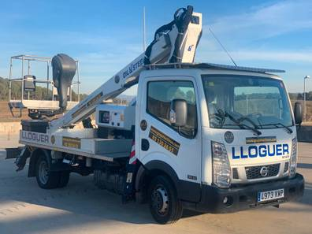

Damos en alquiler camiones grúa con Canastilla de fibra utilizadas para el trabajo realizado en alturas. Estas unidades no son aisladas, su canasta puede ser adecuada para una o dos personas y añadirle un sistema de manejo de materiales, para izaje de elementos desde el suelo hasta la canastilla en su máxima altura. Este tipo de grúas se caracteriza por ser ensambladas, lo cual permite su adecuada operación en terrenos irregulares.
Equipo ideal para manejo de carga extra dimensionada, elevación de carga en terrenos irregulares, izaje de cargas pesadas a gran altura. Limpieza de fachadas para diferentes tipos de estructuras. Mantenimiento e instalación de luminarias, mantenimiento e instalación de postes, instalación de publicidad en alturas, entre otros.

Camiones Grúas Articulados. Capacidad desde 6tn hasta 30tn. Altura hasta 30 metros. En alquiler por días, semanas o meses.
Nuestro equipo cuenta con años de trayectoria para distintos tipos de trabajo en instalación, entre otros.
.jpeg)
Contamos con un personal calificado y apropiado para este trabajo, sin dificultad alguna.
ISAJE